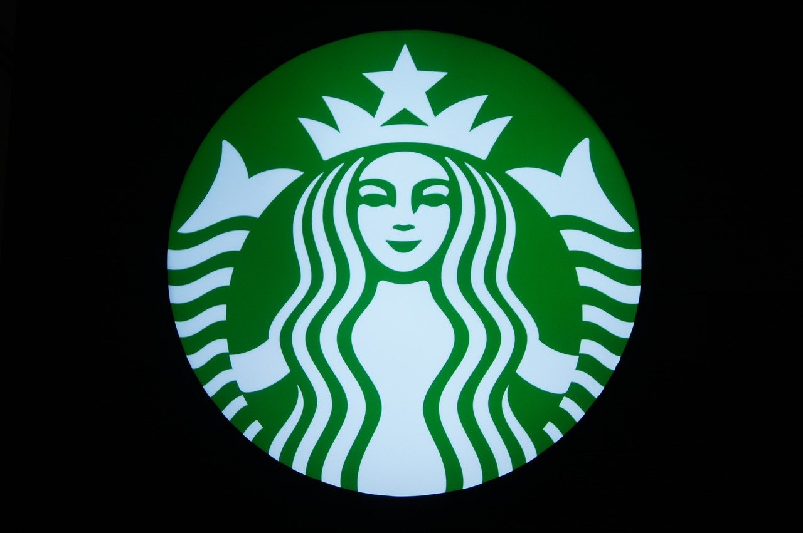
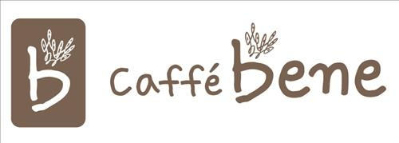

먹어봤던 커피 브랜드

스타벅스
스타벅스(Starbucks™)는 미국의 세계 최대 커피 체인점이다. 커피뿐만 아니라 차, 주스, 디저트 등을 함께 판매한다.
한국에는 1999년 진출하여, 2021년 기준 1,600여개의 매장을 운영하며 커피 프랜차이즈 업계 1위를 차지하고 있다. 별명인 '별다방'이나 줄임말인 '스벅'으로 불리기도 한다. 미국 스타벅스가 지분을 전부 매각해 현재는 이마트가 단독 운영 중이다.[5]
국내 진출 초기에는 높은 가격으로 주목 받았지만, 타 체인들이 스타벅스 수준으로 가격을 맞추면서 현재는 평균 정도의 가격을 유지하고 있다. 상당한 품질과 가격경쟁력으로 한국 및 전 세계 카페 시장에서 압도적인 1등 점유율을 유지하고 있다.

카페베네
대한민국의 토종 커피 체인점.
2008년 설립 이후, 2010년부터 무서운 속도로 빠르게 매장을 늘려나갔으나 실적악화 및 신규사업 실패로 고전하다가, 2015년 연말 대주주가 사모펀드로 바뀌면서 2016년 3월에 새 브랜드 아이덴티티(BI)를 공개하면서 기존 BI를 완전히 갈아엎었다.
2020년 3분기 기준 완전 자본잠식 상태로 결손금이 767억에 달한다. 상장사들 경우 자본잠식의 경우 상장폐지 된다. 일반고객이나 가맹점들로 부터 발생한 수익을 브랜딩이나 메뉴개발 등에 재투자해야 하나 현재 부채가 많은 상태이다.
 메가커피
메가커피
커피 및 음료 전문점으로 주식회사 앤하우스 산하의 국내 브랜드이다. 대용량 사이즈와 저렴한 가격으로 무서운 성장세를 보이는 중이다.
이름답게 기본적으로 음료 양이 상당히 많다. 2021년 6월 기준 차가운 음료 담아주는 테이크아웃 컵은 20온스, 즉 591미리리터 정도. 메가리카노는 양이 무려 1L에 달한다. 그럼에도 가격은 스타벅스에 비해 거의 3분의 1수준이라 굉장히 저렴하다. 에스프레소같은 경우 최대 쓰리샷까지 추가가 가능하다.